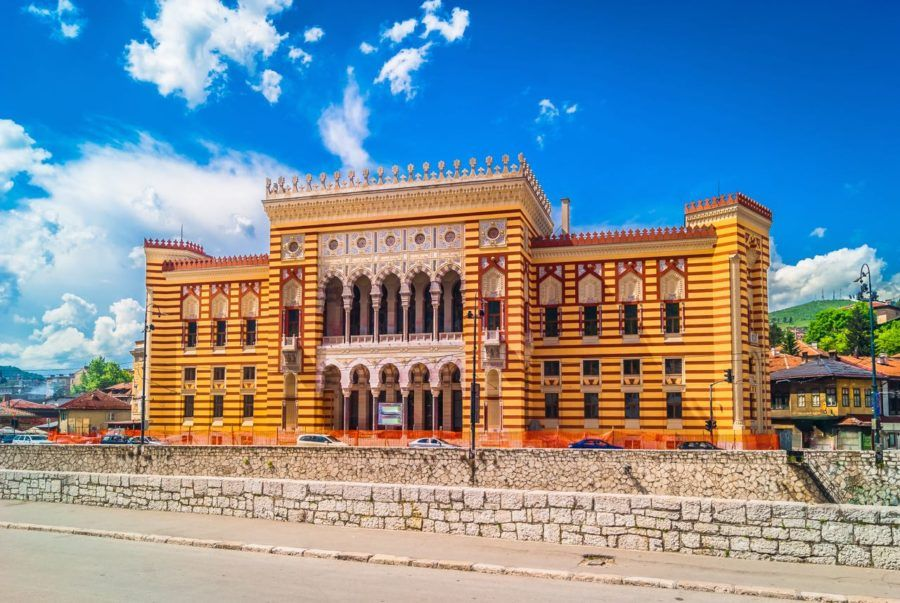
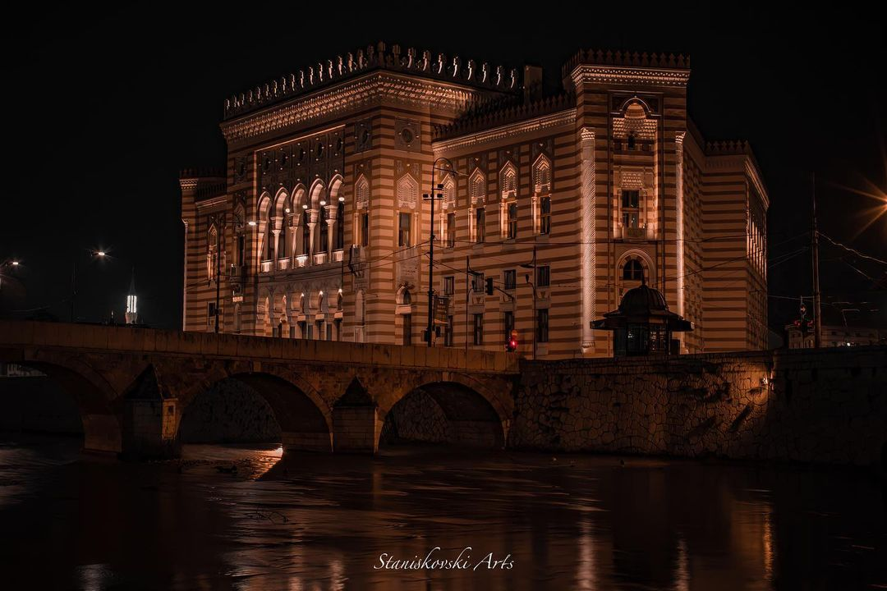
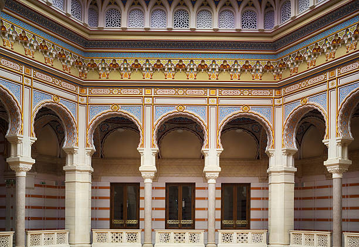
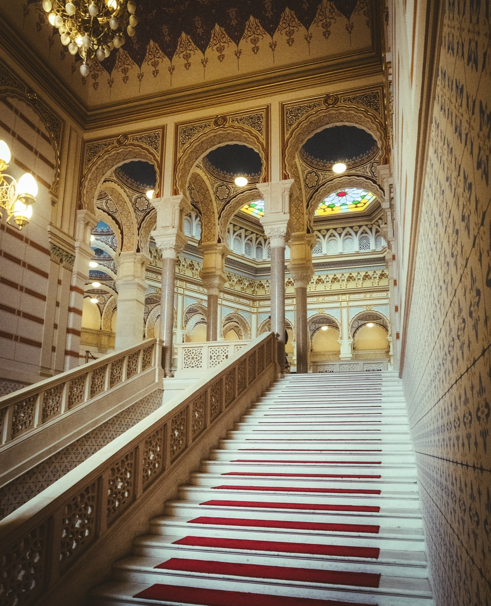
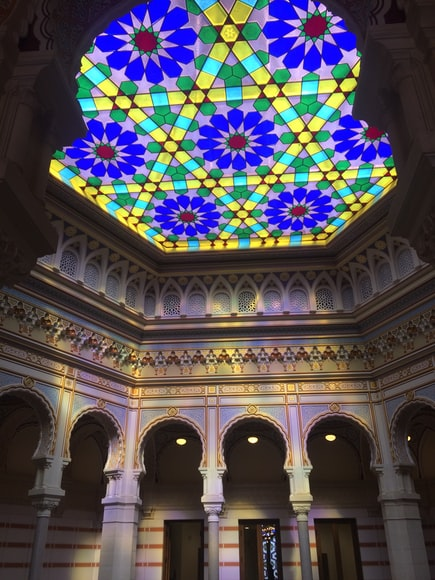
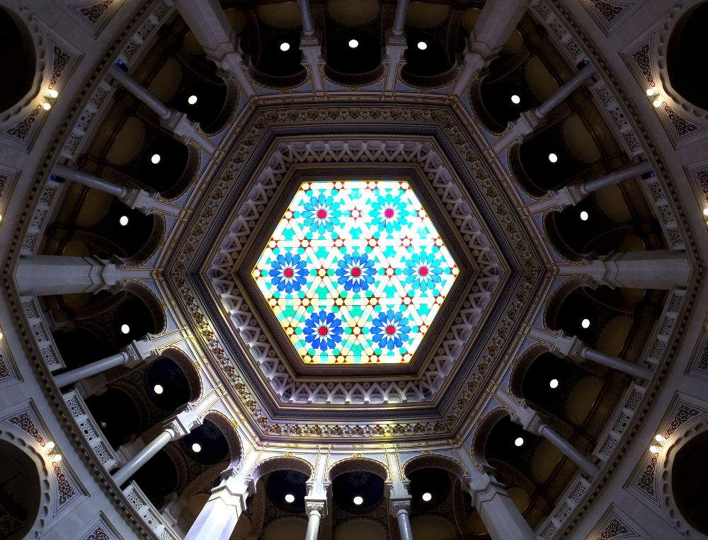
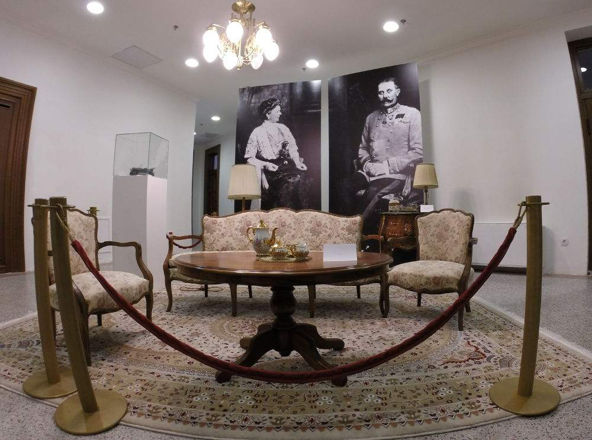
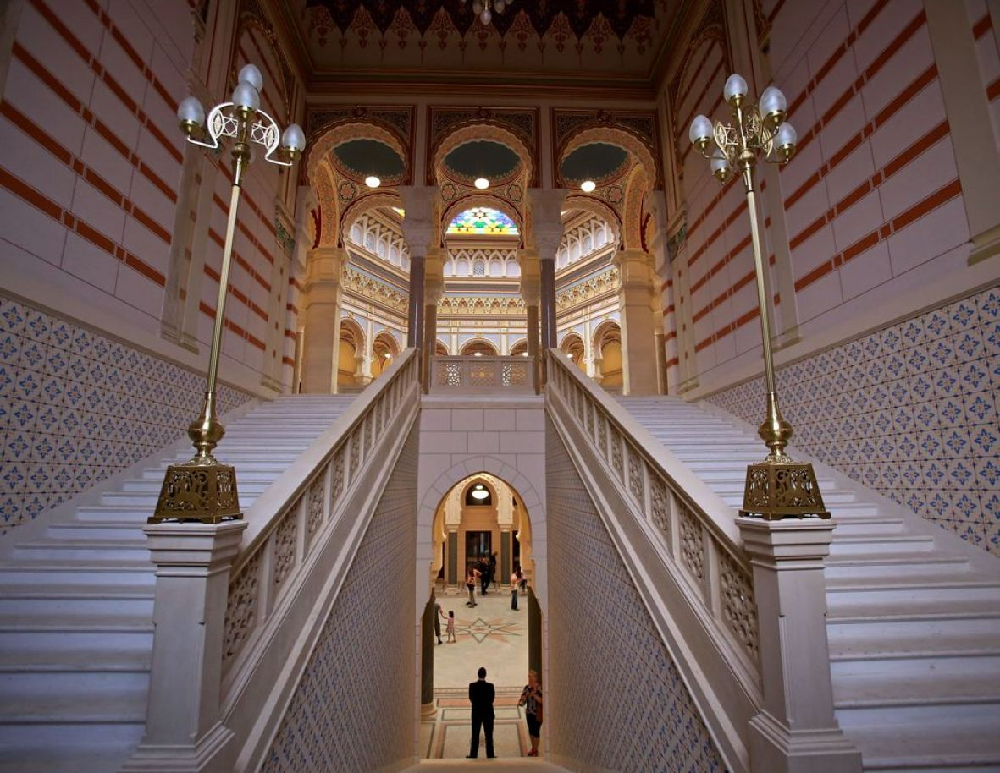

Sarajevska vijećnica je zgrada u Sarajevu nedaleko od Baščaršije i predstavlja jedan od najljepših i najreprezentativnijih objekata iz austrougarskog perioda građen u pseudo-maurskom stilu. U ovom stilu rađena je većina objekata što ih je u Sarajevu ostavila austrougarska vlast, te je sinonim za austrougarski period u Bosni i Hercegovini i zaštitni znak tog vremena.
Po okupaciji Bosne i Hercegovine 1878. godine, po naredbi austrougarske vlasti formirano je Gradsko poglavarstvo Sarajeva koje je do 1881. bilo smješteno u zgradi na lijevoj obali Miljacke. Potreba za izgradnjom reprezentativnog objekta kao sjedišta gradske uprave iskazana je još 1880. godine, ali se sa izgradnjom sarajevske Vijećnice otpočelo tek 1892. godine. Prvi projekat povjeren je Karlo Paržik, na čiji projekat je ministar Benjaminu Kallay imao primjedbe koje projektant nije htio prihvatiti, pa je izrada novog povjerena Alexandru Witteku, koji na njemu radi 1892. i 1893. godine. Kao uzor u izradi ovog projekta poslužila mu je džamija i medresa u Kairu. Kako je Witek navodno, upravo zbog ovog projekta, umno obolio i izvršio samoubistvo, završetak njegovog projekta je povjeren 1894. godine Ćirilu M. Ivekoviću. Izgradnja objekta je započeta 1892. godine, a završena 1894. godine. Objekat Gradske Vijećnice zvanično je završen i svečano otvoren 20. aprila 1896. godine, kada je baron Ivan Apel zgradu zvanično predao na korištenje Gradskom poglavarstvu, a sama Vijećnica je korištena za tadašnje gradske uprave i gradske administracije Sarajeva.
Poslije Drugog svjetskog rata sve, do 1949. godine Vijećnica je služila gradskoj upravi, kao zgrada Okružnog suda Sarajeva i sjedište Bosanskohercegovačkog sabora. Nakon toga Vijećnica postaje Gradska biblioteka, odnosno Nacionalna i univerzitetska biblioteka BiH, te ostaje u toj funkciji do agresije na BiH. U noći između 25. i 26. augusta 1992. godine pogođena je zapaljivim artiljerijskim projektilima. Požar uništava Vijećnicu, zajedno sa ogromnim bibliotečnim fondom Nacionalno-univerziteske biblioteke od oko 2 miliona jedinica. Skoro 700 unikatnih rukopisa i inkunabula uništeno je te noći. Biblioteka je prije tog napada imala 155.000 unikatnih knjiga i rukopisa. U požaru je nestao Katalog Nacionalne i univerzitetske biblioteke Bosne i Hercegovine, oko 80% knjižnog fonda i dokumenata koji svjedoče o historiji Bosne i Hercegovine. Rekonstruisana Vijećnica, rađena po originalnoj dokumentaciji, je svečano završena i otvorena 9. maja 2014. godine na Dan Evrope i Dan pobjede nad fašizmom.
Danas se koristi u svečanim prilikama na državnom i gradskom nivou, za promociju događaja iz kulture, umjetnosti i privrede, uz stalnu i povremene muzejske postavke, redovne sjednice Gradskog vijeća i čini se da je razlonikost upotrebe veća nego ikad ranije.
Na zidovima unutar ovog prostora se nalaze fotografije svih bivših gradonačelnika našeg grada od 1878. godine. Kroz kratke biografije možete se upoznati sa likom i djelom svakog od njih, te saznati zanimljivosti iz perioda njihovih mandata.
Jedan mali prostor, nazvan Franz i Sofie, je uređen namještajem i predmetima pripadajućeg perioda da bar na tren odslika stil i ambijent carskog Beča. U uređenju su postavljene i slike Franca Ferdinanda i njegove supruge Sofije u znak sjećanja na njihovu tragičnu posjetu 1914. godine.
Također, u Vijećnici postoji tzv. Soba savremenika. Ova soba je posvećena četvorici stvaralaca, koji su doprinijeli bogatstvu naše kulture. Svi oni su za svoja djela nagrađeni mnogobrojnim domaćim i međunarodnim priznanjima. Saznajte nešto više o životu arhitekte Ivana Štrausa koji je projektovao neke od najpoznatijih građevina u BiH, slikara Safeta Zeca, jednog od naših najpriznatijih umjetnika u svijetu, pisca Dževada Karahasana čija su djela prevedena na sedamnaest svjetskih jezika, te produkt dizajnera Saliha Teskeredžića, koji je između ostalog nagrađen najpriznatijom svjetskom nagradom u oblasti produkt dizajna.